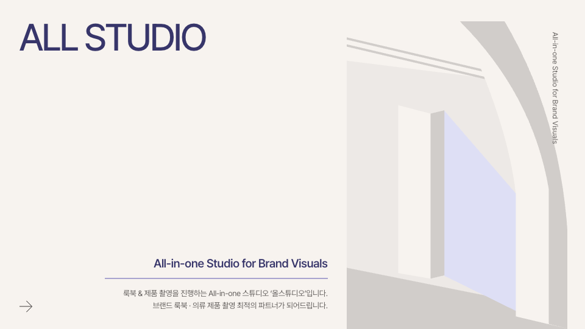
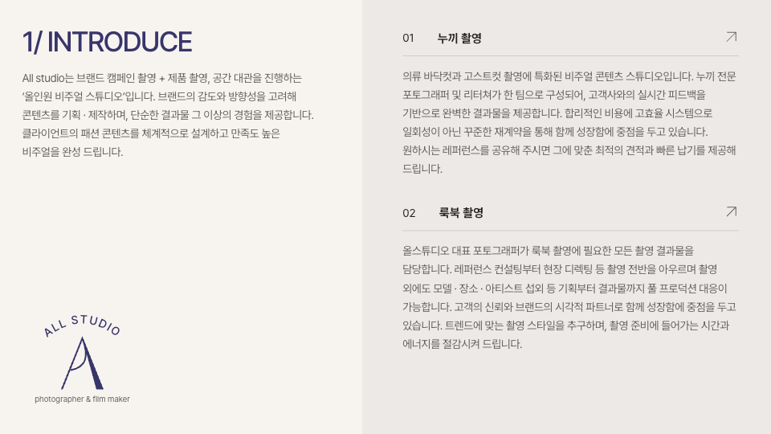
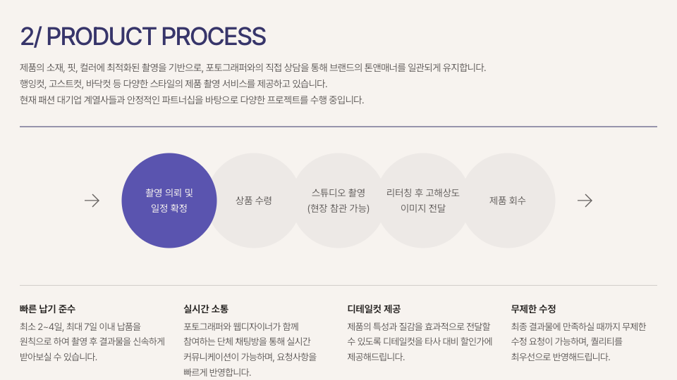
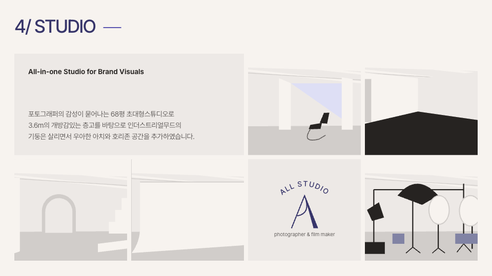
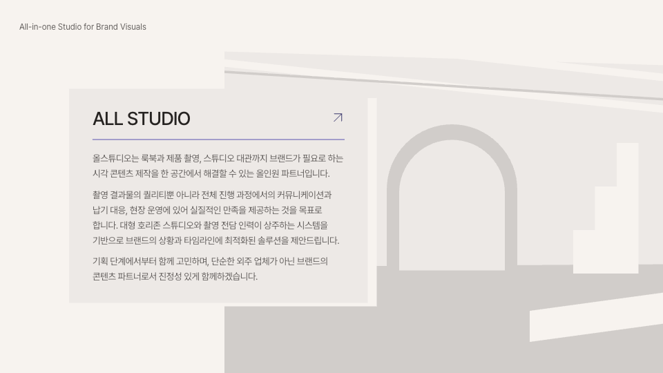
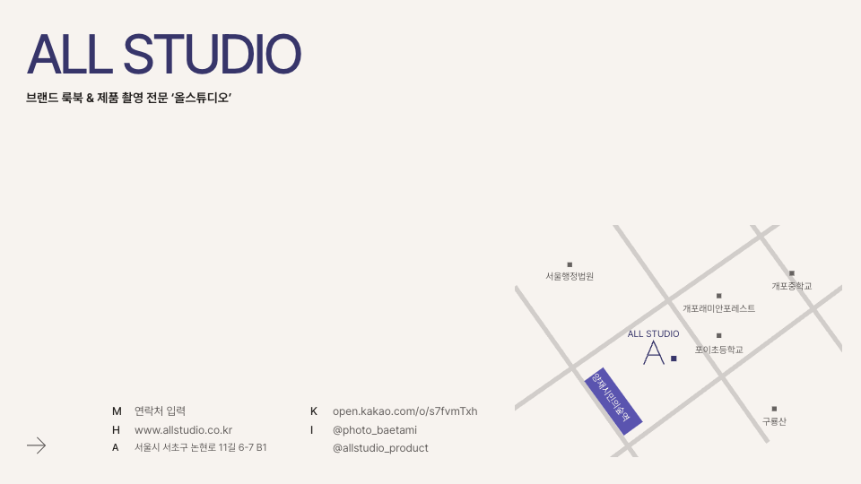

ALL STUDIO · 표지
좌측 초대형 워드마크와 넓은 여백, 하단 우측 정렬 소개 문구, 우측 38% 세로 스튜디오 이미지 · 좌측 초대형 워드마크와 넓은 여백, 하단 우측 정렬 소개 문구, 우측 38% 세로 스튜디오 이미지

1/ INTRODUCE · 촬영 서비스
47%와 53%로 나눈 2단; 왼쪽 소개와 로고, 오른쪽 두 개 번호 서비스 설명 · 47%와 53%로 나눈 2단; 왼쪽 소개와 로고, 오른쪽 두 개 번호 서비스 설명

2/ PRODUCT PROCESS · 제품 촬영 과정
상단 제목·3행 설명, 중앙 다섯 개 연결 원, 하단 네 개 혜택 열 · 상단 제목·3행 설명, 중앙 다섯 개 연결 원, 하단 네 개 혜택 열

4/ STUDIO · 공간 소개
4열 2행 모자이크: 2열 설명 패널, 건축 사진 4개, 로고 타일, 촬영 장비 사진 · 4열 2행 모자이크: 2열 설명 패널, 건축 사진 4개, 로고 타일, 촬영 장비 사진

ALL STUDIO · 올인원 콘텐츠 파트너
스튜디오 공간 배경과 왼쪽 중앙의 겹친 사각 소개 카드 · 스튜디오 공간 배경과 왼쪽 중앙의 겹친 사각 소개 카드

ALL STUDIO · 연락처와 위치
좌측 상단 워드마크와 대형 여백, 하단 두 열 연락처 및 우측 약도 · 좌측 상단 워드마크와 대형 여백, 하단 두 열 연락처 및 우측 약도